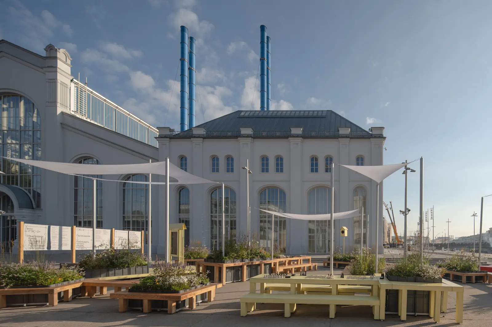
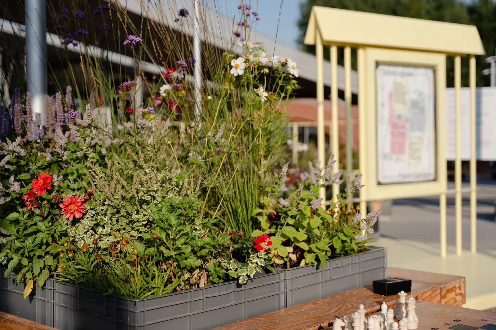
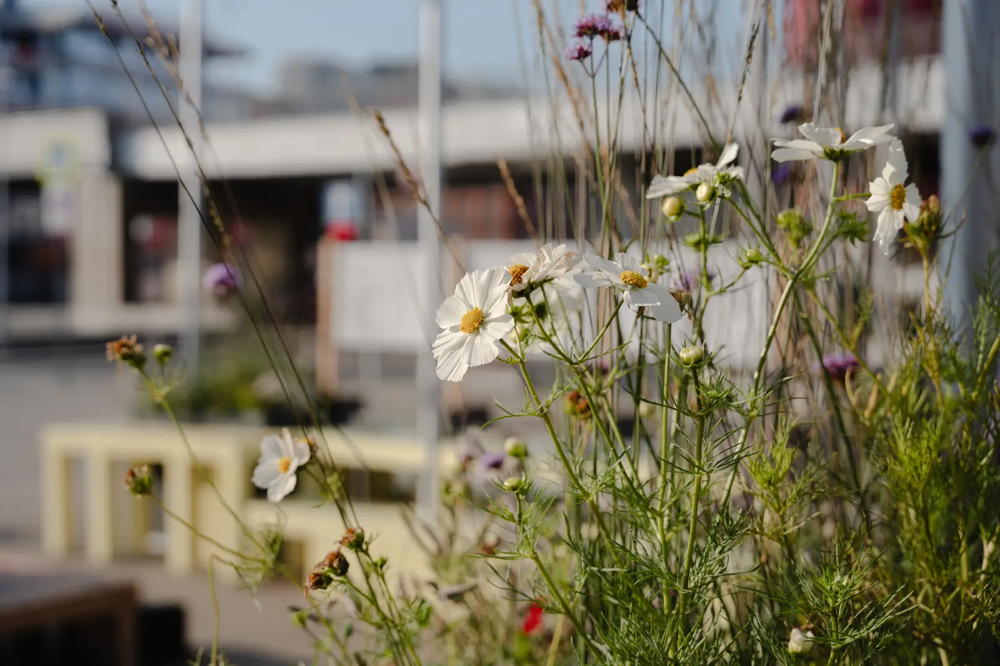
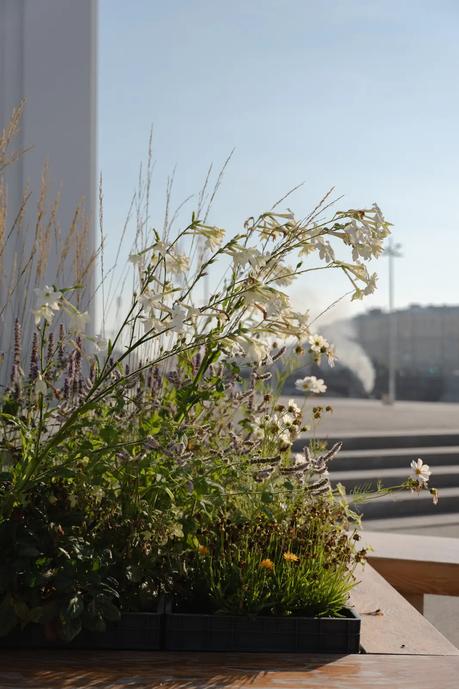
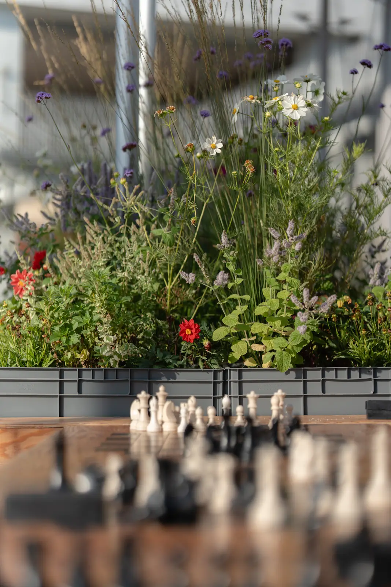
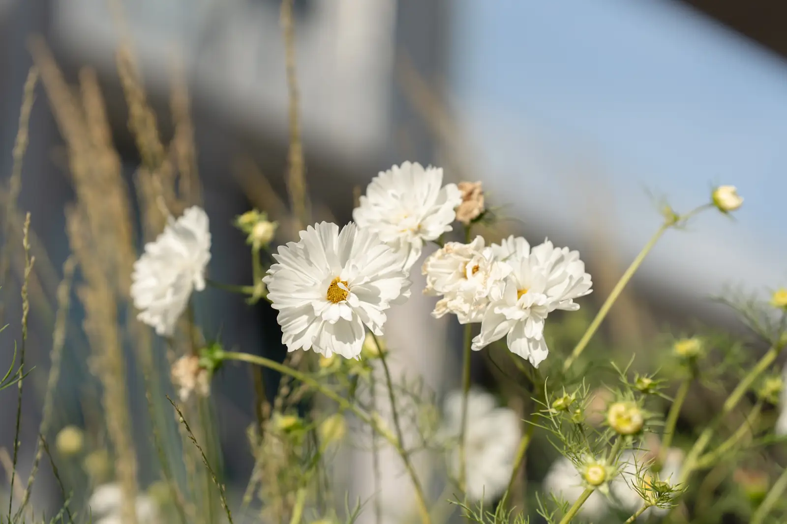

палисадник 2026
Палисадник — ежегодный ландшафтный проект Дома культуры «ГЭС-2» — в этом году был посвящён двору как общему пространству и садам у подъездов детства, собранным из растений, которыми делились соседи.
Северный палисадник, где декоративное и съедобное растут рядом: георгины, космея и душистый табак — с земляникой, мятой и томатами. Его можно узнавать на ощупь, по запаху и на вкус.
В конце сезона на встрече «(Не)забытые растения» мы раздали растения желающим — и сад продолжился на дачах и у жилых домов.




